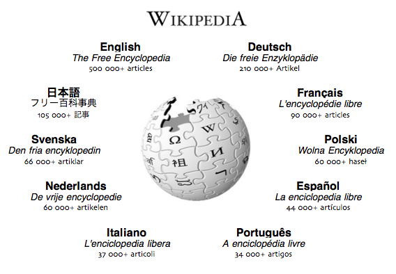

EDUCATION IS KEY TO FUTURE
Education can be thought of as the transmission of the values and accumulated knowledge of a society. In this sense, it is equivalent to what social scientists term socialization or enculturation. Children—whether conceived among New Guinea tribespeople, the Renaissance Florentines, or the middle classes of Manhattan—are born without culture.
